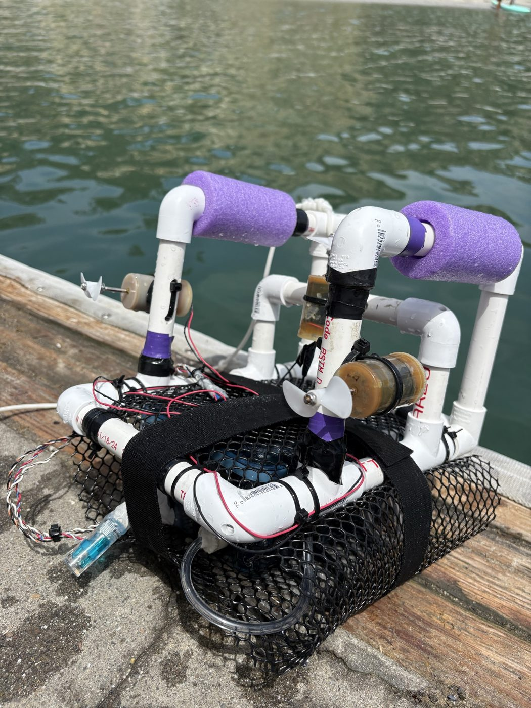
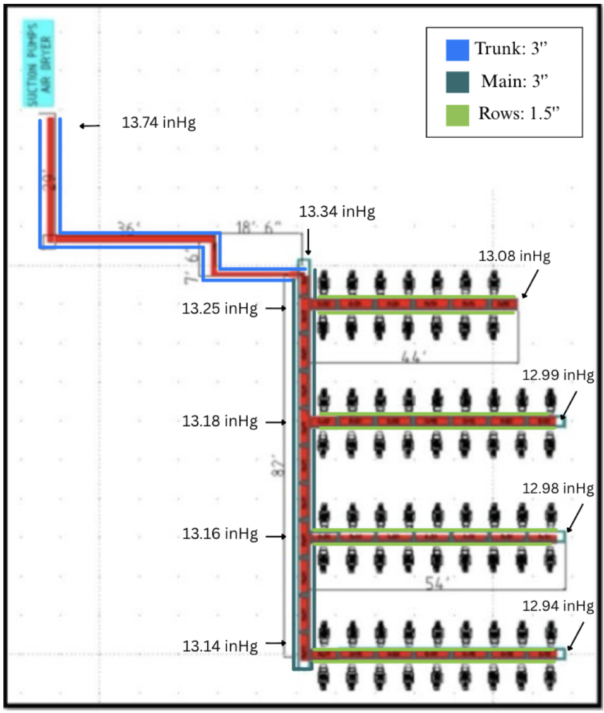
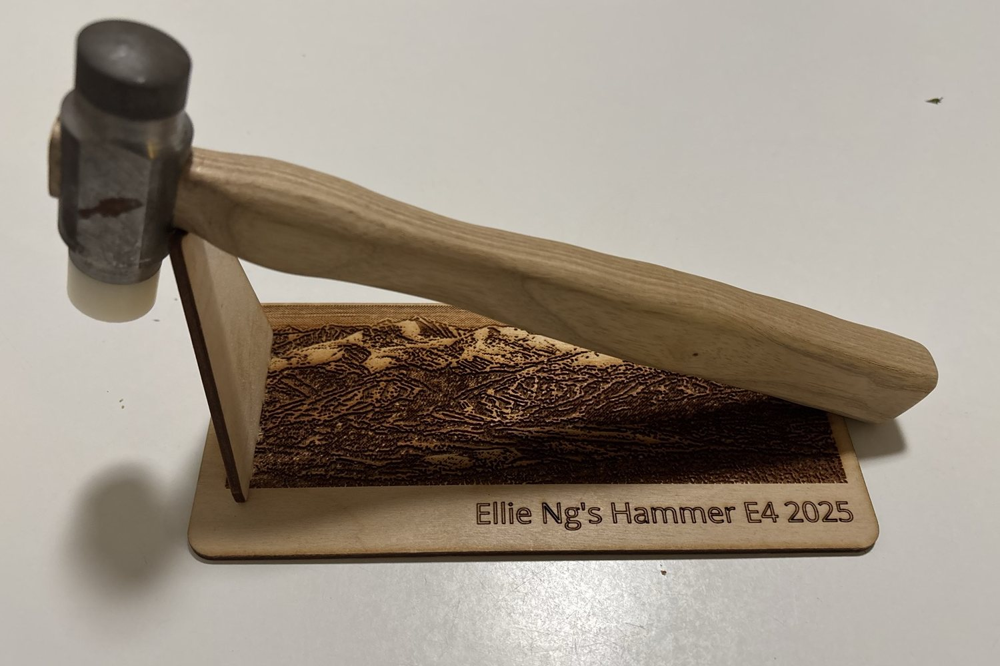
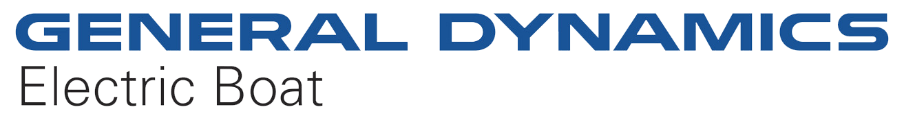
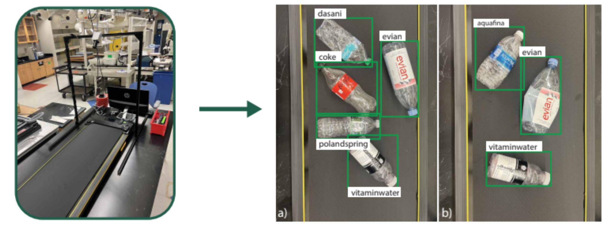
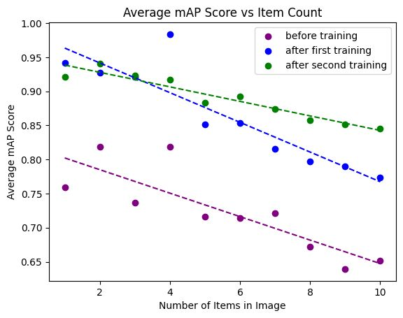

Projects

Autonomous underwater vehicle for ocean sensing
Worked in a team of 4 to design and deploy an autonomous underwater vehicle with a pressure sensor, thermistor, and pH sensor to develop a way to characterize different layers of the ocean to understand ocean acidification and how climate change is harming the natural process of marine organisms. We deployed our AUV at Dana Point, CA, collected data, and presented our findings to professors and other engineering students at Harvey Mudd College. I was the mechanical lead: I designed the frame and waterproof electronics enclosure, ran the buoyancy and ballast calculations, and led integration of the motors, sensors and electronics into the vehicle. I also managed team organization and worked with my teammates on the circuits, C++ code, and data analysis.
Key outcomes
- Led mechanical design and integration, and calculated buoyancy and ballast for neutral trim: 0.63 kg of ballast for freshwater testing, plus 91 g for denser seawater at Dana Point
- Built custom operational-amplifier circuits to scale analog sensor outputs to the input range of a Teensy 4.0. This allowed us to achieve higher resolutions to analyze the data collected.
- Debugged circuits and hardware during testing and deployment using oscilloscopes and multimeters
- Programmed feedback control loops in C++ for AUV depth and dive control
- Used MATLAB to process collected data and create 2D plots

Dental clinic suction analysis
A MATLAB and Python simulation for designing and optimizing the vacuum piping network of large pop-up dental clinics. The software simulates different clinic layouts, evaluates the suction and flow rate at each chair, and recommends the best pipe sizes for each part of the clinic. The baseline model is a 68-chair community dental clinic run in Mansfield, CT by the CT Foundation for Dental Outreach. I led development of the web GUI, a step-by-step configuration wizard that lets the clinic team build a layout and run the optimizer without touching the code.
- Role
- Team member, GUI development lead
- Tools
- MATLAB, Python, NiceGUI
- Code
- GitHub repo and web GUI: open-source release in progress

Machined Hammer
Machined a six-part hammer from raw stock in the Harvey Mudd machine shop, working from engineering drawings with GD&T tolerances and a step-by-step process router. The steel head and faces were turned on the lathe and milled, the hard face was heat-treated and press-fit into the head, and the oak handle was laser-etched, cut, routed and hand-shaped.
- Course
- E4, Harvey Mudd College
- Machines
- Lathe, mill, bandsaws, laser cutter, router table
- Key spec
- Hard face pressed into the head: stem 0.0005–0.002 in wider than its hole
Experience
-
Engineering Consultant, Arcticar
- Designing and prototyping mounting system within Arcticar’s battery module for their electronic refrigeration system
- Conducting finite element analysis using ANSYS to validate our design for shock and vibration
-
Structural Engineering Intern, General Dynamics Electric Boat

- Resolved design and construction issues relating to internal structures within the COLUMBIA class of submarines
- Revised calculation package to demonstrate the structural integrity of design changes
- Performed finite element analysis using proprietary software and gained experience with Teamcenter
- Obtained Secret Clearance (DoD)
-
Undergraduate Researcher, Olsen Lab
Department of Chemical Engineering, Massachusetts Institute of Technology
Plastic in recycling streams loses value because recyclers don't know which additives and dyes it contains. Only the brand that made it does. I worked on an AI image-recognition model that sorts plastic waste by manufacturer as it passes under an overhead camera on a conveyor belt, so brands can buy back their own packaging under extended producer responsibility programs.
- Trained an AI model to sort plastics by manufacturer branding instead of plastic type, enabling manufacturers to reclaim and recycle their products more efficiently by matching specific grades and additives
- Wrote Python scripts to process a large dataset, doubled the dataset to ~40,000 images, tested trained models
- Analyzed how item crowding impacted the model’s prediction and performance, patched dataset, and improved mean average precision scores of brand identification by 23.33%
- Awarded The Ben Huppe '14 Memorial Internship for a Sustainable World

Bottles imaged on the conveyor, then annotated by brand to train the model. 
After the second round of training, accuracy drops only about 1% per extra item in the frame, down from about 2.2%. -
Research Intern, Olsen Lab
Department of Chemical Engineering, Massachusetts Institute of Technology
- Operated nano-FTIR microscope, prepared 300+ samples, analyzed data
- Presented work and findings weekly to Prof. Olsen
Publication“Improving the Optical Sorting of Polyester Bioplastics via Reflectance Spectroscopy and Machine Learning Classification Techniques,” Alexis Hocken, Sharona Huang, Eleanor Ng, and Bradley D. Olsen, ACS Applied Polymer Materials, November 2024.
Get in touch
I'm looking for summer 2027 internships where I can apply my general engineering experience to new problems. Email is the fastest way to reach me.
Email me Download resume